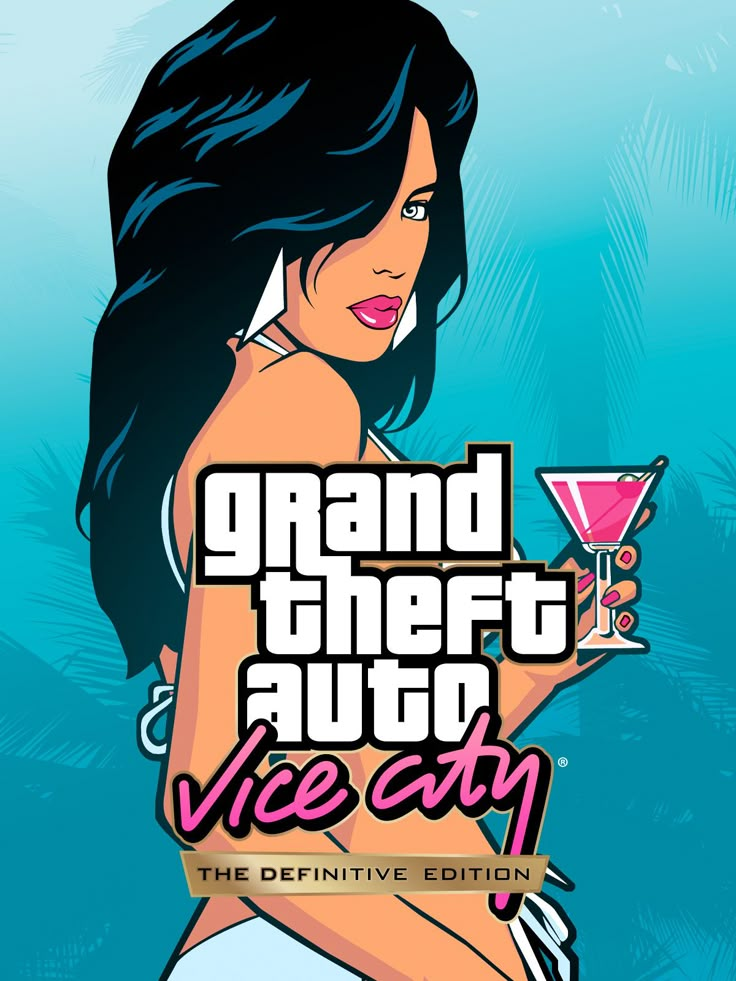
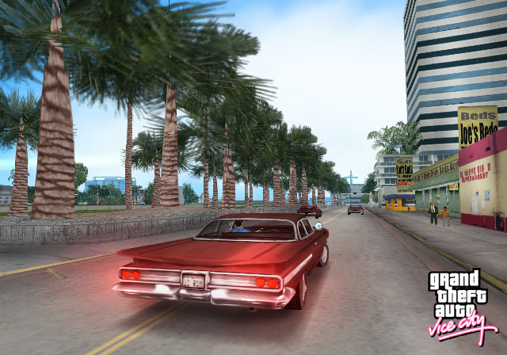
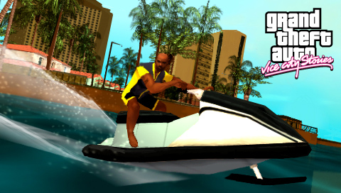

BEM-VINDO AOS ANOS 80
"Bem-vindo aos anos 80. Da década de penteados glam, dos excessos e dos ternos pastel, vem a história de um homem que sobe ao topo da cadeia criminal no retorno de Grand Theft Auto."

Vice City é uma grande área urbana que engloba de praias até pântanos e do glamour até o gueto, e é a mais variada, completa e animada cidade digital já criada. Combinando uma jogabilidade não linear com uma narrativa centrada nos personagens, você chega a uma cidade cheia de prazeres e degradação, e tem a oportunidade de dominá-la como quiser.
Protagonista: Tommy Vercetti
Voz: Ray Liotta
Ambientação: Vice City (1986)
Tommy Vercetti é um ex-pistoleiro da máfia que, após ser solto da prisão, é enviado a Vice City para negociar um acordo de drogas. A transação é uma emboscada, e Tommy precisa construir um império do crime para recuperar o dinheiro e a carga perdidos. Com a ajuda de advogados corruptos, traficantes e músicos, ele domina a cidade dos anos 80.

Protagonista: Victor "Vic" Vance
Voz: Philip Michael Thomas
Ambientação: Vice City (1984)
Vice City, 1984. Há oportunidades de sobra em uma cidade construída em um pântano, cujo crescimento ocorre devido a lutas de poder violentas no comércio de drogas. Construções estão por todos os lados enquanto uma metrópole reluzente nasce, filha do crime e da traição.
Como soldado, Vic Vance sempre protegeu a sua família problemática, o seu país e ele mesmo. Mas depois de uma decisão malfeita, tais tarefas ficaram muito mais difíceis. Levado às ruas de uma cidade dividida entre glamour e gula, Vic deve fazer uma escolha difícil - construir um império ou ser destruído.
